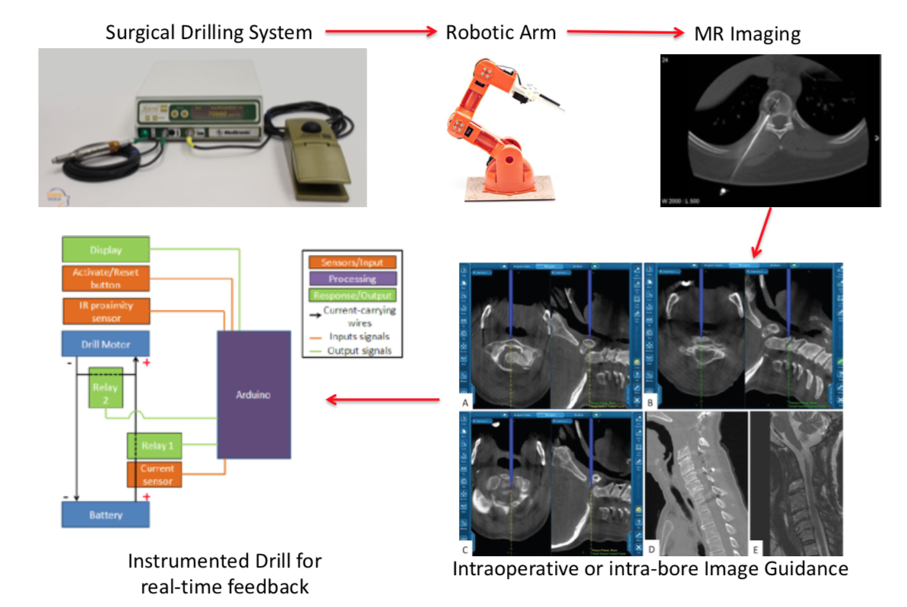
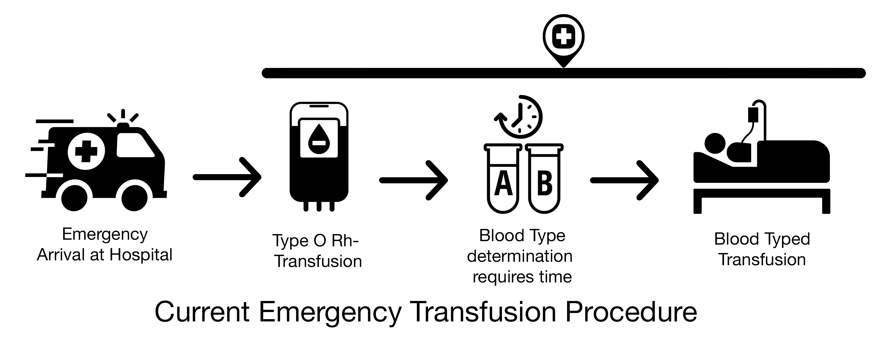

MR-Guided Robotically-actuated C1-C2 Fusion
Medical Device Design Objective: Develop a surgical drill and guidance system that will enable an orthopedic surgeon to accurately position a surgical drill using MR-guidance to plan and validate the trajectory for C1-C2 vertebral fusion procedures. The framework includes the following elements:
- MR-compatible drill and articulation framework
- Image-guidance software for specifying the trajectory of the drill
- A sensor suite for providing real-time feedback regarding the drilling procedure (i.e. depth sensors, forces sensors, torque sensors, etc.)
- A test bench for evaluating and validating this surgical guidance framework

NIH R41 Proposal Co-Author
QuickType: Smart Bandages

